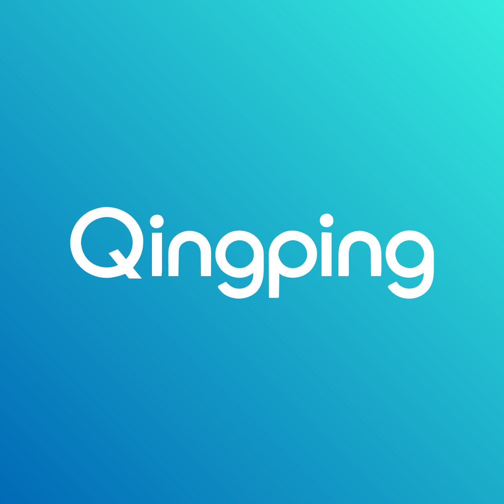

Qingping Brand
青萍品牌规范与素材
品牌色
青萍绿为主色，青萍青为文字色；青萍蓝纳入品牌色，亮青作为辅助色。
文字色
青萍青
沿用 Logo 青萍青色，用于字标、品牌标题与大字号强调文字。
- HEX
#009DB5- RGB
0, 157, 181- CMYK 参考 %
C77 / M11 / Y16 / K3- PANTONE 近似参考
- 7710 C
辅助色
Qingping · 青萍
文字色用于字标与大字号品牌标题；小字号正文使用深色，保持清晰可读。
CMYK 与 Pantone 印刷说明
sRGB → Generic CMYK Profile（Apple 系统配置），相对比色，通道百分比四舍五入为整数。
CMYK 为上述色彩配置下的转换参考值，不是 Pantone 官方 CMYK 配方。实际印刷需按印厂、纸张及 ICC 配置重新分色并打样。Pantone 为 Solid Coated（C，涂布纸）近似专色候选，由页面设计选作参考，未经实体色卡比对，不代表 Pantone 官方最近色或已确认品牌专色。非涂布纸需重新选取 U 色号。
Pantone 官方提醒，屏幕显示为模拟色，使用前应参照实体色卡。查看官方说明
CMYK 为指定配置下的参考值；PANTONE C 为涂布纸近似专色候选，须经实体色卡及打样核准。
Logo
SVG 矢量版本，字标已转为路径，无需安装字体，可等比缩放。
渐变背景版

渐变背景矢量 Logo，可等比缩放。
下载 SVG ↓
网格参考版
网格与中心线供比例及位置参考。
下载 SVG ↓
透明底白色字标
保留原画幅和留白，适合深色背景。
下载 SVG ↓
字标 · Wordmark
仅保留 Qingping 文字路径，透明背景，裁去多余留白；可直接用于导航栏、文档和包装。


Q Logo
从现有 Qingping 矢量字标中提取 Q，保持字形，等比缩放并居中。


使用说明
以下为使用建议，供品牌规范审阅。
- 等比缩放，不拉伸、旋转或重新排字。
- 渐变背景版 Logo 保留完整画面；透明底白色字标置于对比充分的深色背景上。
- 保留素材原色，不添加滤镜、阴影或描边。
- 小尺寸场景优先使用 Q Logo，并检查实际显示效果。
品牌包建议完整字标显示宽度不低于 120 px；安全留白及正式最小使用尺寸待确认；印刷色彩按首节参考值打样核准。